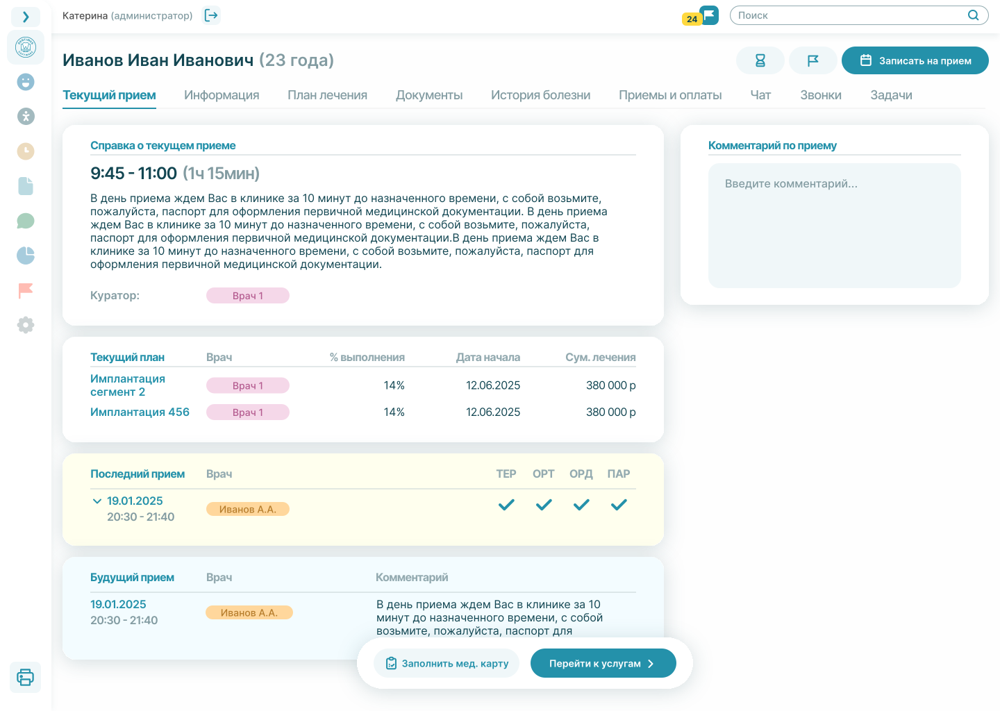

Пациента легко упустить после первого контакта
Обращение принято, но следующий шаг не зафиксирован, подтверждение не доведено до конца, а договорённость остаётся в чате или в голове администратора.
Dentimus помогает удерживать текущих пациентов, снижать ручную нагрузку на администраторов и держать под контролем путь пациента от обращения до приёма.
Когда запись, звонки, задачи и расписание живут в разных местах, пациент чаще выпадает из внимания, а команда тратит время на ручную координацию.
Обращение принято, но следующий шаг не зафиксирован, подтверждение не доведено до конца, а договорённость остаётся в чате или в голове администратора.
Напоминания, переносы, уточнения, задачи после приёма и коммуникации с врачами занимают слишком много внимания и создают постоянный риск ошибок.
Сам календарь есть, но не видно, какие слоты под риском, где нужна реакция команды, где теряется загрузка и как это связано с пациентом.
Проблемы становятся заметны уже по факту: когда пациент не дошёл, приём сдвинулся, информация не передалась, а команда работала без общего контекста.
Dentimus объединяет ключевые процессы клиники в одном интерфейсе, чтобы команда работала согласованно, а руководитель быстрее видел сбои и потери.
История контактов, звонки, сообщения, напоминания и следующие шаги собраны в одном месте.
По расписанию легче управлять загрузкой и быстрее реагировать на переносы и риски потери слотов.
Задачи, статусы, договорённости и события по пациенту находятся перед глазами.
Планы лечения, история, документы, оплаты и текущий визит собраны в одной системе.
Видно, кто отвечает за следующий шаг и где нужна реакция.
Чтобы видеть, где клиника теряет пациентов и деньги в ежедневной работе, а не узнавать об этом только по итоговым цифрам.
Чтобы держать в системе коммуникации, расписание, задачи и передачу информации между ролями.
Чтобы меньше терять пациентов между первым обращением, записью, подтверждением визита и продолжением лечения.
Dentimus подключается к уже работающей системе клиники и берёт на себя коммуникации, задачи, расписание и связку между ролями без полной перестройки процессов.



Сначала в фокусе коммуникации и запись. Дальше результат виден в цифрах.
После наведения порядка в коммуникациях.
После контроля подтверждений и напоминаний.
За счёт задач, статусов и единого контекста.
После более понятной работы со слотами и переносами.
Следующие шаги по пациенту не пропадают между обращением, записью, приёмом и продолжением лечения.
Команда меньше держит в голове и быстрее ориентируется в приоритетах, договорённостях и задачах.
Расписание становится рабочим инструментом управления загрузкой, а не только сеткой слотов.
Руководитель видит, где возникают сбои, что тормозит процесс и где нужна реакция до потери пациента.
Логично начинать с коммуникаций, потому что именно здесь клиника чаще всего теряет текущих пациентов.
В зависимости от МИС — от двух дней до двух недель.
Для клиник, которые хотят лучше удерживать текущую базу на фоне дорогого привлечения.
Покажем коммуникации, расписание, текущий приём, задачи администраторов и точки контроля для руководителя.
Оставьте контакты, и мы покажем платформу на примере ваших процессов: запись, подтверждение, приём и контроль загрузки.